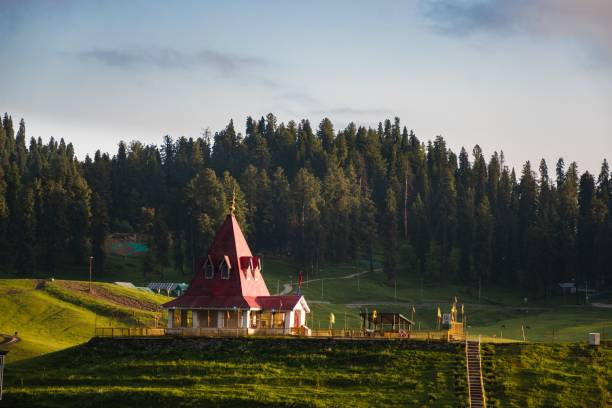
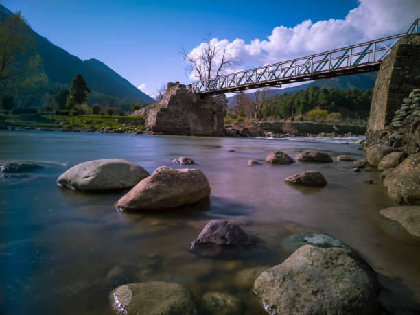
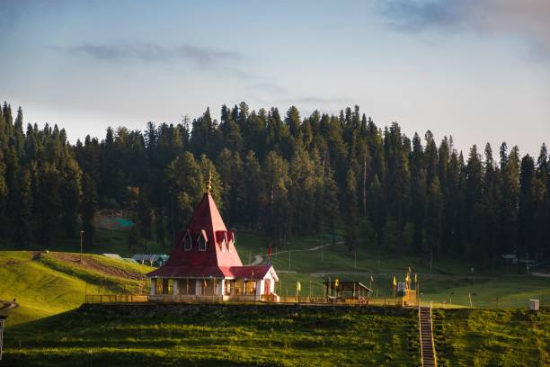
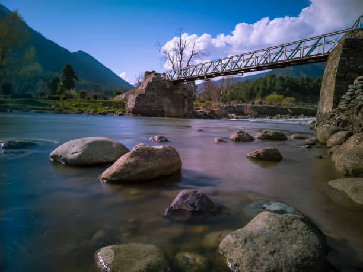

HISTORY
Sonmarg, which means "Meadow of Gold", is a picturesque hill station in the Kashmir Valley located in the Indian union territory of Jammu and Kashmir. Situated at an altitude of 2800 meters and adorned with a majestic glacier, meadow, dense forests, and snow-capped mountains makes Sonmarg an ideal holiday destination in Kashmir. For nature lovers, Sonmarg offers the chance to unwind amidst its scenic vistas; adventure buffs who can indulge in trekking and camping activities for adrenaline rush; and honeymoon couples can spend time cozying up amidst its beauty. The flower-laden (in summers) valley of Sonmarg, nestled amongst the majestic Himalayan range has many tourist attractions to offer and Thajiwas Glacier is the major one. It is an easy day hike recommended to even family vacationers. The adventure lovers in Sonmarg have great opportunities to head out for scenic treks. Amongst the most popular treks starting from Sonmarg are Gangabal Lake Trek and Krishansar and Vishansar twin lakes which in fact also make for important brown trout fishing destinations in Kashmir. The Baltal Valley, located 15km away, is one of the best tourist destinations near Sonmarg. It offers some of the most breathtaking views of the Himalayan mountains. This valley serves as a camping area for pilgrims heading towards the sacred Hindu pilgrimage of Amarnath Cave. The nature lovers will also love to see the beautiful vistas of the Nilagrad River which boasts a red hue in its water and is known to have medicinal properties. Our Sonmarg travel guide promises to offer authentic information for your holiday plan. Find all the insights into Sonmarg Tourism such as its top attractions, best way to reach, ideal time to visit, best things to do along with top Sonmarg tour packages.
 


